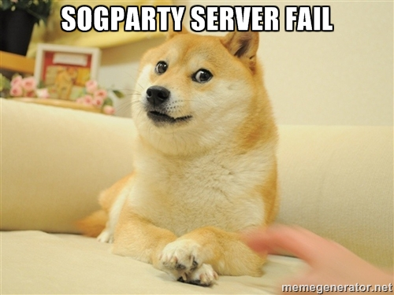

Uh Oh...

Unfortunately, it looks like there is a problem with the SoGParty.com interface to CounterParty. But, because of the power of the blockchain, you may still access all of your assets using any counterwallet server, try visiting: Counterwallet.io
We will have SoGParty.com back up and running shortly!
The fastest way to get immediate support is to talk to the SoGParty developer (X-ETHeREAL-X) on the SoGParty Slack channel. Slack is an easy to use, and free, team discussion and chat service. There are no downloads required, but Slack requires an invitation to join, click here for a free invite to join the SoGParty team! Already a member? Then just visit SoGParty.Slack.com.